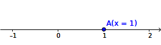
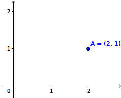
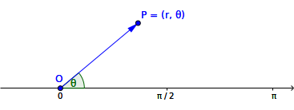

Section 5.1 座標
¶図形を方程式で表したり、数を目で見えるよう可視化させたりする目的で使われるのが、座標(coordinate)である。 座標のとり方のことを座標系(coordinate system)といい、座標系が定められた空間を座標空間(coordinate space)という。特に、2つの軸により定められる座標空間を座標平面という。
Subsection 5.1.1 直交座標系
¶定義 5.1. 直交座標系.
互いに直交する軸(axis)からなる座標系を直交座標系(rectangular coordinate system)という。 軸として、座標平面では\(x\)軸と\(y\)軸、座標空間では\(x\)軸と\(y\)軸と\(z\)軸を使うことが多い。 \(x\)軸と\(y\)軸からなる座標平面を\(xy\)平面、\(y\)軸と\(z\)軸からなる座標平面を\(yz\)平面、\(z\)軸と\(x\)軸からなる座標平面を\(zx\)平面という。 また、\(x\)軸と\(y\)軸と\(z\)軸からなる座標空間を\(xyz\)空間という。 直交座標系ではすべての軸は1点で交わり、この点を原点(origin)といい、originの頭文字をとって点\(O\)と表す。1次元、2次元、3次元の直交座標系は図5.2のように表される。なお、1次元の座標空間は数直線となる。


直交座標系における点の座標は、次のように定義される。
定義 5.3. 直交座標系における座標.
直交座標系では、軸の数と同じだけの実数の組により、座標系の上にある点の「位置」を表す。この「位置」をその点の座標という。 \(x\)軸と\(y\)軸からなる座標平面では、それぞれの軸に対応する位置を\(x\)と\(y\)で表すとき、点の座標はこれらの組\((x, y)\)で表される。 同様に、\(x\)軸と\(y\)軸と\(z\)軸からなる座標平面では、それぞれの軸に対応する位置を\(x\)と\(y\)と\(z\)で表すとき、点の座標はこれらの組\((x, y, z)\)で表される。 点\(P\)の座標が\((x, y)\)や\((x, y, z)\)であることを、\(P(x, y)\)や\(P(x, y, z)\)と表すことがある。 点の位置を定めるため、原点\(O\)の座標はすべての軸について0として、座標平面では\(O(0, 0)\)、座標空間では\(O(0, 0, 0)\)とする。Subsection 5.1.2 極座標系
¶直交座標系以外の座標系には、曲線を含む図形を表すのに便利な極座標系がある。
定義 5.4. 極座標系.
ある点\(O\)と、\(O\)を端点とする半直線からなる座標系を極座標系(polar coordinate system)という。 極座標系での点\(O\)を極(pole)、\(O\)を端点とする半直線を始線(polar axis)という。 極座標系では、点\(P\)の座標を、極\(O\)からの距離\(r (\geqq 0)\)と、\(OP\)と始線のなす角\(\theta\)を用いて\((r, \theta)\)と表す。極座標系は図5.5のように表される。

極座標系と直交座標系は、次の式で変換できる。
定理 5.6. 極座標系と直交座標系の変換.
直交座標系で座標\((x, y)\)の点は、極座標系では座標\((\sqrt{x^2 + y^2}, \theta) (\cos\theta = \frac{x}{r}, \sin\theta = \frac{y}{r})\)となる。 また、極座標系で座標\((r, \theta)\)の点は、直交座標系では座標\((r\cos\theta, r\sin\theta)\)となる。Subsection 5.1.3 空間の極座標
¶極座標系を座標空間に拡張した座標系には、円柱座標系と空間極座標系の2つがある。 円柱座標系は極座標系と直交座標系を組み合わせた座標系で、円柱のように平面上は極座標系が扱いやすいものの、高さについては直交座標系を用いる方が便利な場合に用いる。 空間極座標系は高さ方向も角度で表した座標系で、球のように高さ方向についても角度で表す方が便利な場合に用いる。
定義 5.7. 円柱座標系.
平面を極座標系で表し、それに高さを表す\(z\)軸を加えた座標系を円柱座標系という。 円柱座標系では、点の座標は\((r, \theta, z)\)で表される。定義 5.8. 空間極座標系.
平面を極座標系で表し、それに高さ方向の角度を表す\(\phi\)軸を加えた座標系を空間極座標系という。 空間極座標系では、点の座標は\((r, \theta, \phi)\)で表される。円柱座標系は、平面上の座標を直交座標系に変換すれば、直交座標系の座標空間における座標に変換できる。 空間極座標系と直交座標系は、次の式で変換できる。